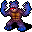

Arena of Blood
英語版 CrawlWiki の記事「Arena of Blood」(0.32 向け、2026-02-11 版)の翻訳です。原文の著者は編集履歴をご覧ください。
この記事は 0.32 の時点の内容で、最新の 0.34 とは違うところがあるかもしれません。
| Arena of Blood
汝は臓物と肉の穴へと降りゆく 汝の前には混沌の僕が横たわる |
Arena of Blood(通称 meatsprint)は、ダンジョンスプリントの8番目のモジュールだ。ほとんどのスプリントと違って、遊び方は一つしか許されない。マクレブを信仰し、悲痛の斧を振るうこと。ほかのやり方では勝ち目はまったくない。慎重な位置取り、薙ぎ払いの攻撃、そしてマクレブの「敵を倒すと回復する」恩恵をとことん使い倒すことでしか生き残れない。

悲痛の斧
| この斧を手にすると、あなたの精神はあなたの思い通りにならない。あなたの身体は限界を超えた力を発揮し、あなたの一挙手一投足はマクレブの意のままとなる。 |
+∞ の処刑人の斧(小柄な種族ととても小さい種族ではブロードアックス)
命中もダメージも無限大で、しかも薙ぎ払いが付いているので、攻撃するたびに隣の敵を必ず全員倒せる。それでも攻撃を速くするために、斧のスキルを鍛えるのは大事だ。
始める前に
始める前に知っておいてほしいのは、種族選びで考えるべきことはごくわずかだということだ。ここで得られる経験値はばかげた量で、防具は一切なく、敵の攻撃のほとんどは避けようがない。そのため、種族のスキル適性や装備スロットの違いはほとんど関係ない。
マップを壊す種族
ジンニーはArena of Bloodを完全に破壊してしまう。ここでは呪文を手に入れる方法がないし、仮にあったとしても、こんな慌ただしい場所で呪文を覚えるのは難しすぎる。ところがジンニーは生まれつき、すぐに呪文を覚えられる。攻撃呪文は悲痛の斧の足元にも及ばないが、補助の呪文はとてつもなく強い。中でも多重攻撃は、運よく手に入れば画面じゅうの敵を一掃できるすばらしい呪文だ。ほかにも空間分離、死の霊媒術、精神不和などが役に立つ。生まれつきの火炎耐性と、毒・瘴気への免疫まで付いてくるのだから言うことはない。
もっと文字どおりの意味でマップを壊せるのがフォーミシッドだ。穴を掘る能力があるので、遠距離攻撃から身を隠せる。斜めに交互に掘り進めば、一度に1体の敵からしか見えない穴を作れる。掘削を使うモンスターに出くわすまではうまくいく。初期呪文を覚える時間を稼ぐこともできる。
種族
スプリントを壊さずに遊びたいなら、トロルとオーガは単純な生存力の面ではっきり有利だ。いずれ炎、冷気、負のエネルギー、拷問、毒の攻撃が飛んでくるので、レヴナントと悪魔の血族もここでは強い。ミイラはおすすめしない。浴びることになる炎のダメージの量からして、あっという間にやられてしまうだろう。
フェリッドは斧をまったく持てないので、代わりに +27,000 の殺戮の指輪をもらえる。これでどんな相手もまず倒せるが、残念ながら必ずとはいかない。当然ながら薙ぎ払いの機会はすべて失うが、残機があるので、これはこれで面白い選択肢になる。
職業
職業選びは単純だ。能力値はおおむね関係ない。武器のダメージが無限大なので腕力は無意味だし、初期の魔法書にある高レベルの呪文を覚える時間もないので、知力も用がない。器用を上げれば回避が上がり、受ける攻撃のごく一部を避けられる見込みが出てくる。だから意味のある能力値は器用だけだが、それすらほとんど誤差の範囲だ。一方、もらえる初期の魔法書は、ほぼどれもここで役に立つものが入っていない。斧の扱いもほぼ素人の状態から、あっという間に達人の域まで鍛え上がる。というわけで、次の例外を除けば、どの職業もほとんど同じだ:
- 戦士 - フォーミシッド以外ではひどい選択だ。盾を外すのに何ターンも使わなければならない。
- 転位術師 - はっきり有利になる数少ない職業の一つ。転位術師は瞬間移動の巻物を通常の1枚ではなく2枚持って始まる(とても役に立つ。特に1枚をArena of Bloodの最終局面まで取っておけるなら心強い)。また、覚える時間を作れれば、瞬間移動とヴィーの電撃突進もどちらも役に立つ。
印
信仰心が★6つになると(すぐになる)、3種類の地獄の印(Infernal Mark)から一つを選べるようになる。Arena of Bloodではまるっきり害になる印もあれば、ゲームの様相を一変させる能力をくれる印もある。
- 狂信者の印 - 悪魔に変身できる。ただし変身が切れたあとに代償を払わなければならない。このモードでは殺戮への変身は信じられないほど強すぎる。拷問が効かなくなり、あらゆるダメージが軽減される。そしてその代償はというと……安全な休憩場所に連れて行かれ、ほかのものと同じく斧の一振りで死ぬ悪魔とたまに戦うだけだ。スコアを最大にしたいなら、無理のない範囲でできるだけ早くこれを選ぼう。
- 血砕の印 - 敵が死ぬときに爆発することがある。爆発のダメージは敵の体力に比例するので、ここの頑丈なモンスターを倒すと連鎖が起き、画面のあちこちがまとめて吹き飛ぶこともある。安定はしないが、うまくはまると派手に決まる。
- 軍勢の印 - 地獄の従者が地獄の軍勢に置き換わり、強い悪魔1体の代わりに弱めの悪魔の群れを呼び出すようになる。発動はほぼタダで、しばらく続き、必要なときに通り抜けられる遮蔽をたっぷり作ってくれる。
- 処刑の印 - 攻撃すると処刑の形態に変身することがあり、生来の猛進と反撃の補助攻撃を得る。猛進はありがたい。ただし血しぶきが絶えない割に、あまり安定しない。
- 司祭の印 - HP が50%を切ると、ダメージを与える飛び道具をいくつも放つ。もう一度 HP を全快まで戻さないと再び使えない。ここの敵の頑丈さを考えると、血の矢は意外なほどまともなダメージを出す。周りに傷ついた敵の大群がいるなら(たとえば肉のヒドラがまとめて拷問を浴びせたあとなど)、瀕死の状態から立ち直るよい手段にもなる。瀕死と全快を何度も行き来することになるので、しょっちゅう発動する。
- 暴君の印 - もっと強い悪魔を呼べるようになり、敵を倒すと悪魔が強化される。ただ、悪魔が長く生き残れるわけでも、役に立つようになるわけでもない。
- 残虐の印 - 破壊の解放を続けて使うと強化される。そもそもこのモードで破壊の解放を使うのは賢くない。
- 殺戮の印 - 地獄の従者が、敵の隣に大きな爆発とともに現れるようになる。爆発はモンスターにたいしたダメージを与えず、肉の盾をあなたから引き離してしまう。
- 殲滅の印 - 地獄の従者が消滅の球体に置き換わる。ダメージはごくわずかで、せいぜい敵の群れを短いあいだ衰弱させるか凍結させる程度だ。唯一の囮役兼肉の盾の供給源を失うことになる。
ただし、印を受け入れると大量のダメージを受けるので、敵が隣にいるときにはやらないこと!
基本情報
スタート地点は大きな円形の闘技場の中央だ。足元に悲痛の斧が落ちているので、すぐに拾うこと。斧を手にすると、近くにマクレブの祭壇が4つあるのに気づくだろう。できるだけ早くそこで祈ろう。ほとんど間を置かずに敵が押し寄せてきて、先へ進むにつれてどんどん危険になっていく。戦う前にスキルの訓練メニューを開き、斧だけを鍛えるように設定しておこう。
最初の位置は理想的とは言えない。部分的に囲ってくれる短い壁が4つあるほかは遮蔽と呼べるものがなく、いずれ強力な打擲型の攻撃を持つ敵がたくさん視界の端にやって来る。残念ながら、移動して有利になる場所もないし、どのみち探索する余裕もほとんどない。
焦らず敵を近接攻撃の間合いにおびき寄せ、攻撃の機会を与えずに倒していこう。敵がだんだん手ごわくなってきたら、必ずx で調べて何ができるのかを確かめ、それに合わせて動くこと。斧はすぐに極められる。そうしたら次は戦闘(ここでは HP がものを言う)、それから躱し身、隠密、甲冑の順に極めよう。ほかのダンジョンスプリントのモジュールと同じく、役に立つ消耗品をいくつか持って始まるので、生き延びるのに必要な場面で使おう(特にスピードの薬はとても強力で、ここぞというときの耐性の薬も大きな助けになる)。
やがて、Arena of Bloodのボスである肉の王がやって来る。
オーブは肉の王のいた場所ではなく、あなたの足元に落ちることを覚えておこう。
モンスター
 肉袋: 最初に出会う敵で、ただの近接攻撃の相手だ。殺戮の指輪をはめているので、育っていないキャラクターには命取りになり、鍛えた戦士にもそこそこの脅威になる。とはいえ、たいていはタダで経験値と回復をくれる相手にすぎない。
肉袋: 最初に出会う敵で、ただの近接攻撃の相手だ。殺戮の指輪をはめているので、育っていないキャラクターには命取りになり、鍛えた戦士にもそこそこの脅威になる。とはいえ、たいていはタダで経験値と回復をくれる相手にすぎない。
| 肉の彫刻家たちが作り出した忌まわしき軍団の一体だ。人間の姿をおぞましく模倣したもので、見分けのつかない肉の塊を縫い合わせ、手足を一見でたらめに縫い付けてできている。皮膚はところどころだらりと垂れ下がり、別のところでは不快に膨らんでいる。どれも肉に大きな印が刻まれており、それはねじくれた創造者の誇りの証である。 |
 肉の狂戦士: 常にバーサークしている敵で、動きがずっと速く、レベルを上げきった戦士でも重傷を負うほど強く殴ってくる。序盤の運の悪い死は、たいていこいつが何もできないうちに突っこんできたせいだろう。序盤にこいつが近づいてくるのを見つけたら、距離を取ること。一気にこちらのマスまで詰め寄られて叩き潰されないように。
肉の狂戦士: 常にバーサークしている敵で、動きがずっと速く、レベルを上げきった戦士でも重傷を負うほど強く殴ってくる。序盤の運の悪い死は、たいていこいつが何もできないうちに突っこんできたせいだろう。序盤にこいつが近づいてくるのを見つけたら、距離を取ること。一気にこちらのマスまで詰め寄られて叩き潰されないように。
| 肉の彫刻家たちが生み出した、忌まわしきものの軍勢の一体だ。その体は大きく筋骨隆々としている。素早く、激しい怒りをもって動き、その存在の中にある唯一の思いは、熱狂のうちにあなたを引き裂くことだけだ。暴れ狂いながら、耳障りな騒音を立てる。 |
 破壊者: それまでのどの敵よりも桁違いに強く殴ってくるうえ、瞬間接敵を唱えて驚くほど素早く近接攻撃の間合いに入ってくる。1ターンごとに目を離さず、一撃たりとも当てさせないこと。
破壊者: それまでのどの敵よりも桁違いに強く殴ってくるうえ、瞬間接敵を唱えて驚くほど素早く近接攻撃の間合いに入ってくる。1ターンごとに目を離さず、一撃たりとも当てさせないこと。
| 破壊者たちがあなたの上に降りかかり始める。彼らは群れをなし、怒りを伴ってやって来る。その顎は奈落のように、底なしの深淵のように大きく開いている。彼らはあなたに破滅をもたらし、あなたの亡骸を貪り喰らうだろう。 |
 大きな肉袋: かなり強い敵で、生まれつき内なる炎がかかっている。ふつうなら内なる炎のかかった敵を近接攻撃で倒すのは避けるところだが、ここではほかに手がないし、正直なところ生かしておくほうがずっと危ない。叩き切って花火を楽しもう!
大きな肉袋: かなり強い敵で、生まれつき内なる炎がかかっている。ふつうなら内なる炎のかかった敵を近接攻撃で倒すのは避けるところだが、ここではほかに手がないし、正直なところ生かしておくほうがずっと危ない。叩き切って花火を楽しもう!
| 肉の彫刻家たちが作り出した忌まわしき軍団の一体だ。その膨れ上がった巨体は、呪われた炎で絶えず脈打ち、うずいている。今にも臓物の奔流となって破裂しそうに見える。 |
 肉の彫刻家: 大きな肉袋と同じくらい強く殴ってくるが、捻れた蘇生がなくなってからは、ほかに目立ったことは何もしない。破壊者と同じように対処しよう。
肉の彫刻家: 大きな肉袋と同じくらい強く殴ってくるが、捻れた蘇生がなくなってからは、ほかに目立ったことは何もしない。破壊者と同じように対処しよう。
| 生ならざるものの職人で、この彫刻家は不気味な骸骨の姿をしている。六本の長い腕の先には指の折れたねじれた手があり、それを使って蜘蛛のように這い回る。その頭蓋骨は異様に大きく、穴だらけだ。その骨は赤く染まってひび割れており、操り人形を組み上げるために紡ぐ不浄な呪文が刻み込まれている。 |
 呪われた身: 直接にはそれほど危なくない。近接攻撃はたいしたことがなく、唯一の呪文の打擲の一撃も、うっとうしいがそれほど命取りではない。困ったことに、王族のミイラと同じ死の呪いをかけてくる。運がよければ拷問を受けるか、どうでもいい能力値がいくらか下がるだけで済む。運が悪いと減速させられ、次々に現れては倒されていくので、おそらくゲームの最後までそのままになる。
呪われた身: 直接にはそれほど危なくない。近接攻撃はたいしたことがなく、唯一の呪文の打擲の一撃も、うっとうしいがそれほど命取りではない。困ったことに、王族のミイラと同じ死の呪いをかけてくる。運がよければ拷問を受けるか、どうでもいい能力値がいくらか下がるだけで済む。運が悪いと減速させられ、次々に現れては倒されていくので、おそらくゲームの最後までそのままになる。
| 呪われし者たちは、あなたより先に来た者たちだ。彼らはあなたが自分たちと同じ運命をたどるのを見届けるためにやって来た。 |
 哀れな魂: 常に透明な遠距離攻撃の脅威。生者にはとてつもないダメージの衰弱の矢を、アンデッドにはさらに凶悪なアンデッドの解呪を使ってくる。何もないところから急にずたずたにされたら、たぶんこいつの仕業だ。
哀れな魂: 常に透明な遠距離攻撃の脅威。生者にはとてつもないダメージの衰弱の矢を、アンデッドにはさらに凶悪なアンデッドの解呪を使ってくる。何もないところから急にずたずたにされたら、たぶんこいつの仕業だ。
| 囚われている定命の世界から抜け出そうともがく亡霊だ。触れたものすべてから生命と不死の力を吸い取る。 |
 暴君: 強力な呪文の使い手で、旋風の一撃で大ダメージを狙い撃ちしてきたり、おぞましきものの召喚で役立たずの雑魚を呼んで戦場をふさいだりする。呼ばれた雑魚はあなたの回復の邪魔になるだけだ。しかも自分に加速をかけると、どちらもずっと手際よくやってのける。選べるなら、さっさと始末しよう。
暴君: 強力な呪文の使い手で、旋風の一撃で大ダメージを狙い撃ちしてきたり、おぞましきものの召喚で役立たずの雑魚を呼んで戦場をふさいだりする。呼ばれた雑魚はあなたの回復の邪魔になるだけだ。しかも自分に加速をかけると、どちらもずっと手際よくやってのける。選べるなら、さっさと始末しよう。
| 骨と頭蓋骨の途方もない塊で、歩く墓所だ。それが近づくにつれて悲鳴と絶叫が聞こえてくる。押し潰すような一歩ごとに骨を砕き落とし、永遠の不安の中で自らを組み直している。 |


| 肉の彫刻家たちが生み出した、忌まわしきものの軍勢の一体だ。悪魔のような狂乱に燃え上がり、比類なき凶暴さで突き刺し、踏みにじる。その皮膚は剥がれ、下にあるぬらぬらと光る腱と筋がむき出しになっており、洞穴のような大口の中の歯は血に染まっている。 |
 恐怖: 出会いうる中でも最悪の相手の一つ。視界の端にとどまりがちで、拷問と天罰を浴びせてくる。そのうえ近接攻撃で減速させてくることがあり、ここではそれが死刑宣告に等しい。さっさと倒そう。
恐怖: 出会いうる中でも最悪の相手の一つ。視界の端にとどまりがちで、拷問と天罰を浴びせてくる。そのうえ近接攻撃で減速させてくることがあり、ここではそれが死刑宣告に等しい。さっさと倒そう。
| 存在そのものへの冒涜であり、苦痛と劫罰しかない虚無だ。そのこの世ならぬ姿は引き裂かれてねじれ、黒く虚ろである。理性的な思考を持たず、憎しみと、あなたの魂を穢したいという欲望しか知らない。 |
 肉のヒドラ: ふつうヒドラは近接攻撃でしか脅威にならず、選べるなら斧のような断ち切る武器で攻撃してはいけない相手だ。ところがこの異形の獣は苦痛の紋章を連発してくるので、近接攻撃でできるだけ早く仕留めるべきだ。神話級の再生力も、悲痛の斧の前では無力だ!
肉のヒドラ: ふつうヒドラは近接攻撃でしか脅威にならず、選べるなら斧のような断ち切る武器で攻撃してはいけない相手だ。ところがこの異形の獣は苦痛の紋章を連発してくるので、近接攻撃でできるだけ早く仕留めるべきだ。神話級の再生力も、悲痛の斧の前では無力だ!
| 肉の彫刻家たちが生み出した、忌まわしきものの軍勢の一体だ。その八本の首はどれも膨れ上がって長く伸び、しわくちゃで霊液を滴らせる巨大な胴体につながっている。その無数の頭は苦痛にのたうち痙攣しながら血を吐き出し、自らにも、その忌まわしい姿を目にしたあらゆるものにも苦しみをもたらす。 |
 災厄: 毒への耐性を持つ種族なら、災厄はほとんど無害だ。それ以外の種族にとっては、毒素の矢、猛毒の雲、それほどではないが猛毒の矢を使えるのが壊滅的な脅威になりうる。できれば、近接攻撃の間合いに入ってくるまで、こちらへの射線を通させないようにしよう。
災厄: 毒への耐性を持つ種族なら、災厄はほとんど無害だ。それ以外の種族にとっては、毒素の矢、猛毒の雲、それほどではないが猛毒の矢を使えるのが壊滅的な脅威になりうる。できれば、近接攻撃の間合いに入ってくるまで、こちらへの射線を通させないようにしよう。
| 生々しく病んだ皮膚を持ち、胆汁と膿を滲ませ、毒と病をまき散らす、巨大な蛇のような姿のものだ。 |
 観測者: これも透明な脅威。たまたま近づいてきて切り刻まれるまで、ひたすら猛火の矢、ファイアボール、打擲の一撃を浴びせてくる。居場所がわかって、動ける手番が1ターン空いているなら、射線が通らないように位置を変えるとよい。
観測者: これも透明な脅威。たまたま近づいてきて切り刻まれるまで、ひたすら猛火の矢、ファイアボール、打擲の一撃を浴びせてくる。居場所がわかって、動ける手番が1ターン空いているなら、射線が通らないように位置を変えるとよい。
| あなたは見えざるものを見る。あなたが見つめると、彼らも見つめ返してくる。彼らは囁き、笑い、にやつき、泣き、軽蔑をこめてあなたを横目で見て、崇拝をこめてあなたを見つめる。彼らは観測者であり、あなたの価値を裁く者であり、あなたの最期を決める者である。 |
 肉の君主: 対峙する中でも最も危険な相手の一つ。ダメージに +400 の殺戮のボーナスが付いているので、近接攻撃のダメージはとんでもない。しかも自分に加速をかけ、こちらを減速させてくるので、その強烈な一撃を驚くほどよく当ててくる。
肉の君主: 対峙する中でも最も危険な相手の一つ。ダメージに +400 の殺戮のボーナスが付いているので、近接攻撃のダメージはとんでもない。しかも自分に加速をかけ、こちらを減速させてくるので、その強烈な一撃を驚くほどよく当ててくる。
| 肉の王に仕える最も偉大な僕の一体だ。筋骨逞しく、敏捷で、悪意に満ちている。 |
 邪悪なるもの: 闘技場で出会う中でも、ずば抜けて厄介な相手だ。壁を掘り抜いてきて、瘴気と天罰を浴びせ、死ぬまで混乱させ続けてくる。肉の王が現れてから(そしておそらく倒されてから)まもなく、こいつらが群れをなして押し寄せ、すぐにこいつらしか出てこなくなる。闘技場には意志力を補う手段が何もないので、混乱が切れ目なく続き、脱出するか死ぬまでそのままになるだろう。
邪悪なるもの: 闘技場で出会う中でも、ずば抜けて厄介な相手だ。壁を掘り抜いてきて、瘴気と天罰を浴びせ、死ぬまで混乱させ続けてくる。肉の王が現れてから(そしておそらく倒されてから)まもなく、こいつらが群れをなして押し寄せ、すぐにこいつらしか出てこなくなる。闘技場には意志力を補う手段が何もないので、混乱が切れ目なく続き、脱出するか死ぬまでそのままになるだろう。
| 呪いと疫病に満ちあふれた、やせ衰えた姿のものだ。その出現は終末の日を告げている。 |
ユニーク
 捕縛者: 絡めとりと番兵の標的を使ってくる。間合いの長い武器は持たずに現れることに注意。
捕縛者: 絡めとりと番兵の標的を使ってくる。間合いの長い武器は持たずに現れることに注意。
| 入りし者は逃れられぬ。 |
 従僕: 間合いの長い武器を持った強力な近接攻撃の使い手。それを活かす暇を与えないこと。
従僕: 間合いの長い武器を持った強力な近接攻撃の使い手。それを活かす暇を与えないこと。
| その薙刀は地獄の炎で燃えている。 |
 冒涜者: 近接攻撃はたいした脅威ではないが、ファイアボールと猛毒の雲を撃ってくる。全体としては、ここのほかの多くの敵ほど怖くない。こいつの盾は悲痛の斧を少しも防げない。
冒涜者: 近接攻撃はたいした脅威ではないが、ファイアボールと猛毒の雲を撃ってくる。全体としては、ここのほかの多くの敵ほど怖くない。こいつの盾は悲痛の斧を少しも防げない。
| その盾には地獄の炎の図柄が描かれている。 |
 肉の王: Arena of Bloodの最後のボス。苦悩の王笏を装備し、球雷と旋風の一撃を浴びせ、ツィツィミトルを次々に呼び出してくる。倒すと、ゾットのオーブがあなたの足元に落ちる。
肉の王: Arena of Bloodの最後のボス。苦悩の王笏を装備し、球雷と旋風の一撃を浴びせ、ツィツィミトルを次々に呼び出してくる。倒すと、ゾットのオーブがあなたの足元に落ちる。
| あなたは汚穢と腐敗と堕落の化身、肉の王を目の当たりにした。その汚らわしい体は極限まで膨れ上がり、粘り気のある液体と死の悪臭を漏らしている。その頭は目が飛び出し、牙が二つに割れた猪のもので、あなたを見て鼻を鳴らし金切り声を上げるたびに、その鼻は広がって汁を滲ませる。その口は歯のない裂け目で、血だまりをよだれのように垂らし、おぞましい残骸を吐き出している。その首は引き伸ばされて前に垂れ下がり、皮膚はたるんで下に垂れている。その巨大な腹はうごめいて歪み、中にいる幼虫たちが忌まわしい解放の時を待っている。その脚はもはや脚とは分からない肉の塊で、突起と脈打つ腫れ物に覆われている。このおぞましい姿を目にしてあなたの頭はくらくらし、息詰まるような悪臭にむせながら、正気を保とうとして感覚が閉ざされ始める。 |
 名状しがたきもの: 隠しボス。肉の王のおよそ2倍の時間を闘技場で過ごすと現れる(ただし肉の王と違って、現れたことは知らされない)。万が一こいつを倒せたとしても、その頃には出てくるモンスターはほとんど邪悪なるものばかりになっている。旋風の一撃と打擲の一撃を浴びせながら呪われし群れを大量に呼び出し、そのうえ分裂して分身を作る。倒すと、ぬめりのルーンがあなたの足元に落ちる。
名状しがたきもの: 隠しボス。肉の王のおよそ2倍の時間を闘技場で過ごすと現れる(ただし肉の王と違って、現れたことは知らされない)。万が一こいつを倒せたとしても、その頃には出てくるモンスターはほとんど邪悪なるものばかりになっている。旋風の一撃と打擲の一撃を浴びせながら呪われし群れを大量に呼び出し、そのうえ分裂して分身を作る。倒すと、ぬめりのルーンがあなたの足元に落ちる。
| それが近づくにつれ、星々の耳をつんざく咆哮の向こうから、惑星たちの残響が聞こえてくる。それは深淵の顎だ。それは内から這い寄る混沌を生み出す。それはあなたが目にする最後の光景である。 |
小技
- 敵がたくさん落とす殺戮の指輪は拾わなくていい。悲痛の斧で命中もダメージもすでに無限大だからだ。
- 生き延びる手段は攻撃することだ。マクレブが、敵を倒すたびに回復してくれる。ほかのことができるのは、ふつうは隣に敵が1体もいないときだけだ。敵にタダで殴らせないように、そして遠くの敵の射線の通る攻撃に身をさらさないように動こう。
- 1ターン余裕があるなら、従者を何体か呼び出して囮にできる。あなたに寝返るほど長く生き残ることはまずないし、もし最初から敵対して現れても、ここのほかの敵と同じくらい簡単に片づけられるはずだ。
- 闘技場には霊視の指輪が2つと火炎耐性の指輪が2つある。霊視は闘技場の北端と南端に、火炎耐性は西と東に置かれている。たいていは指輪を3つ以上拾う時間はない(なので、オクトポードで遊んでもそれほど得はない)。
- 敵があなたの視界の中に湧くことがある。一歩進むたびに立ち止まって、見えているモンスターの一覧を確認しよう。
- 0.27 でジンニーと多重攻撃が追加されるまでに、ジンニー以外で名状しがたきものを倒した記録が7件ある。どれも岩を掘れるキャラクターで、ルーンを持ち帰れた者は一人もいなかった。
マップ
MAP
xxxxxxxxxxxxxxxxxxxxxxxxxxxxxxxxxxxxxxxxxxxxxxxxxxxxxxxxxxxxxxxxxxxxxx
xxxxxxxxxxxxxxxxxxxxxxxxxxxxxxxxxxxxxxxxxxxxxxxxxxxxxxxxxxxxxxxxxxxxxx
xxxxxxxxxxxxxxxxxxxxxxxxxxxxxxxxxxxxxxxxxxxxxxxxxxxxxxxxxxxxxxxxxxxxxx
xxxxxxxxxxxxxxxxxxxxxxxxxxxxxxxxxxxxxxxxxxxxxxxxxxxxxxxxxxxxxxxxxxxxxx
xxxxxxxxxxxxxxxxxxxxxxxxxxxxxxxxxxxxxxxxxxxxxxxxxxxxxxxxxxxxxxxxxxxxxx
xxxxxxxxxxxxxxxxxxxxxxxxxxxxxxxxxxxxxxxxxxxxxxxxxxxxxxxxxxxxxxxxxxxxxx
xxxxxxxxxxxxxxxxxxxxxxxxxxxxxxxxxxxxxxxxxxxxxxxxxxxxxxxxxxxxxxxxxxxxxx
xxxxxxxxxxxxxxxxxxxxxxxxxxxxxxxxxxxxxxxxxxxxxxxxxxxxxxxxxxxxxxxxxxxxxx
xxxxxxxxxxxxxxxxxxxxxxxxxxxxxxxxxxxxxxxxxxxxxxxxxxxxxxxxxxxxxxxxxxxxxx
xxxxxxxxxxxxxxxxxxxxxxxxxxxxxxxxxxxxxxxxxxxxxxxxxxxxxxxxxxxxxxxxxxxxxx
xxxxxxxxxxxxxxxxxxxxxxxxxxxxxxxxxxxxxxxxxxxxxxxxxxxxxxxxxxxxxxxxxxxxxx
xxxxxxxxxxxxxxxxxxxxxxxxxxxxxxxxxxxxxxxxxxxxxxxxxxxxxxxxxxxxxxxxxxxxxx
xxxxxxxxxxxxxxxxxxxxxxxxxxxxxxxxxxxxxxxxxxxxxxxxxxxxxxxxxxxxxxxxxxxxxx
xxxxxxxxxxxxxxxxxxxxxxxxxxxxxxxxxxxxxxxxxxxxxxxxxxxxxxxxxxxxxxxxxxxxxx
xxxxxxxxxxxxxxxxxxxxxxxxxxxxxxxxxxxxxxxxxxxxxxxxxxxxxxxxxxxxxxxxxxxxxx
xxxxxxxxxxxxxxxxxxxxxxxxxxxxxxxxxxxxxxxxxxxxxxxxxxxxxxxxxxxxxxxxxxxxxx
xxxxxxxxxxxxxxxxxxxxxxxxxxxxxxxxxxxxxxxxxxxxxxxxxxxxxxxxxxxxxxxxxxxxxx
xxxxxxxxxxxxxxxxxxxxxxxxxxx3111111+1111113xxxxxxxxxxxxxxxxxxxxxxxxxxxx
xxxxxxxxxxxxxxxxxxxxxxxx111111111111111111111xxxxxxxxxxxxxxxxxxxxxxxxx
xxxxxxxxxxxxxxxxxxxxx1111111111xx1xx1xxxxx111111xxxxxxxxxxxxxxxxxxxxxx
xxxxxxxxxxxxxxxxxx21111111..................1111111xxxxxxxxxxxxxxxxxxx
xxxxxxxxxxxxxxx11111....xxxx.....xx.xx............1121xxxxxxxxxxxxxxxx
xxxxxxxxxxxx2211111....x...........................111122xxxxxxxxxxxxx
xxxxxxxxxxxx221111......x.........1x.x.......x......11122xxxxxxxxxxxxx
xxxxxxxxxxxx1111........x..................xxxx.....11111xxxxxxxxxxxxx
xxxxxxxxxxxx111....xxx...x..........................11111xxxxxxxxxxxxx
xxxxxxxxxxxx11...xxx......x.......................x....11xxxxxxxxxxxxx
xxxxxxxxxxxx11..x...............'''''..................11xxxxxxxxxxxxx
xxxxxxxxxxxx11......x..........'''''''............x....11xxxxxxxxxxxxx
xxxxxxxxxxxx11.......x......11x'''''''x11..............11xxxxxxxxxxxxx
xxxxxxxxxxxx41..........x...11x'''''''x11.........xx...14xxxxxxxxxxxxx
xxxxxxxxxxxx11.......x......xxx'''''''xxx..............11xxxxxxxxxxxxx
xxxxxxxxxxxx11..x..........'''''.xxx.'''''.......xxx2..11xxxxxxxxxxxxx
xxxxxxxxxxxx111.xx.......x'''''..._...'''''............11xxxxxxxxxxxxx
xxxxxxxxxxxx11.1.x.....x..'''''x.....x'''''..x.x.......11xxxxxxxxxxxxx
xxxxxxxxxxxx*1.1.2xxx.....'''''x_.{._x'''''...........11*xxxxxxxxxxxxx
xxxxxxxxxxxx11.1.xx....x..'''''x.....x'''''.x.x.x....1111xxxxxxxxxxxxx
xxxxxxxxxxxx11.1x........x'''''..._...'''''............11xxxxxxxxxxxxx
xxxxxxxxxxxx11..x..........'''''.xxx.'''''...x.x.x..x..11xxxxxxxxxxxxx
xxxxxxxxxxxx11..............xxx'''''''xxx..........x...11xxxxxxxxxxxxx
xxxxxxxxxxxx41..............11x'''''''x11...........x..14xxxxxxxxxxxxx
xxxxxxxxxxxx11..............11x'''''''x11..........x...11xxxxxxxxxxxxx
xxxxxxxxxxxx11.......x.........'''''''.................11xxxxxxxxxxxxx
xxxxxxxxxxxx11......x.x.x.......'''''.....x...x......xx11xxxxxxxxxxxxx
xxxxxxxxxxxx11.......x.x.................x....x.....xx.11xxxxxxxxxxxxx
xxxxxxxxxxxx11xxx...x.x.x..............xx.....x.....x2221xxxxxxxxxxxxx
xxxxxxxxxxxx1122xx...x.x.....x........x......x....xx22211xxxxxxxxxxxxx
xxxxxxxxxxxx11122x....................x...xxx....x1111111xxxxxxxxxxxxx
xxxxxxxxxxxx3111111xx.......xx.x...............x111111113xxxxxxxxxxxxx
xxxxxxxxxxxxxxx11111xx.......................111111111xxxxxxxxxxxxxxxx
xxxxxxxxxxxxxxxxxx211111xxxx....x.....xxxx111111112xxxxxxxxxxxxxxxxxxx
xxxxxxxxxxxxxxxxxxxxx1111111............x1111111xxxxxxxxxxxxxxxxxxxxxx
xxxxxxxxxxxxxxxxxxxxxxxx111111.........111111xxxxxxxxxxxxxxxxxxxxxxxxx
xxxxxxxxxxxxxxxxxxxxxxxxxxx3111111+1111113xxxxxxxxxxxxxxxxxxxxxxxxxxxx
xxxxxxxxxxxxxxxxxxxxxxxxxxxxxxxxxxxxxxxxxxxxxxxxxxxxxxxxxxxxxxxxxxxxxx
xxxxxxxxxxxxxxxxxxxxxxxxxxxxxxxxxxxxxxxxxxxxxxxxxxxxxxxxxxxxxxxxxxxxxx
xxxxxxxxxxxxxxxxxxxxxxxxxxxxxxxxxxxxxxxxxxxxxxxxxxxxxxxxxxxxxxxxxxxxxx
xxxxxxxxxxxxxxxxxxxxxxxxxxxxxxxxxxxxxxxxxxxxxxxxxxxxxxxxxxxxxxxxxxxxxx
xxxxxxxxxxxxxxxxxxxxxxxxxxxxxxxxxxxxxxxxxxxxxxxxxxxxxxxxxxxxxxxxxxxxxx
xxxxxxxxxxxxxxxxxxxxxxxxxxxxxxxxxxxxxxxxxxxxxxxxxxxxxxxxxxxxxxxxxxxxxx
xxxxxxxxxxxxxxxxxxxxxxxxxxxxxxxxxxxxxxxxxxxxxxxxxxxxxxxxxxxxxxxxxxxxxx
xxxxxxxxxxxxxxxxxxxxxxxxxxxxxxxxxxxxxxxxxxxxxxxxxxxxxxxxxxxxxxxxxxxxxx
xxxxxxxxxxxxxxxxxxxxxxxxxxXXXXXXXXXXXXXXXxxxxxxxxxxxxxxxxxxxxxxxxxxxxx
xxxxxxxxxxxxxxxxxxxxxxxxxxX^.^.^.^.^.^.^Xxxxxxxxxxxxxxxxxxxxxxxxxxxxxx
xxxxxxxxxxxxxxxxxxxxxxxxxxX^^^^^^^^^^^^^Xxxxxxxxxxxxxxxxxxxxxxxxxxxxxx
xxxxxxxxxxxxxxxxxxxxxxxxxxXXXXXXXXXXXXXXXxxxxxxxxxxxxxxxxxxxxxxxxxxxxx
xxxxxxxxxxxxxxxxxxxxxxxxxxxxxxxxxxJxxxxxxxxxxxxxxxxxxxxxxxxxxxxxxxxxxx
xxxxxxxxxxxxxxxxxxxxxxxxxxxxxxxxxxxxxxxxxxxxxxxxxxxxxxxxxxxxxxxxxxxxxx
xxxxxxxxxxxxxxxxxxxxxxxxxxxxxxxxxxxxxxxxxxxxxxxxxxxxxxxxxxxxxxxxxxxxxx
xxxxxxxxxxxxxxxxxxxxxxxxxxxxxxxxxxxxxxxxxxxxxxxxxxxxxxxxxxxxxxxxxxxxxx
ENDMAP